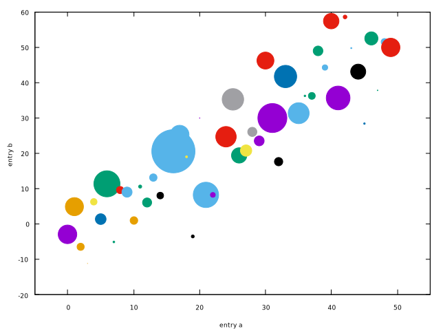
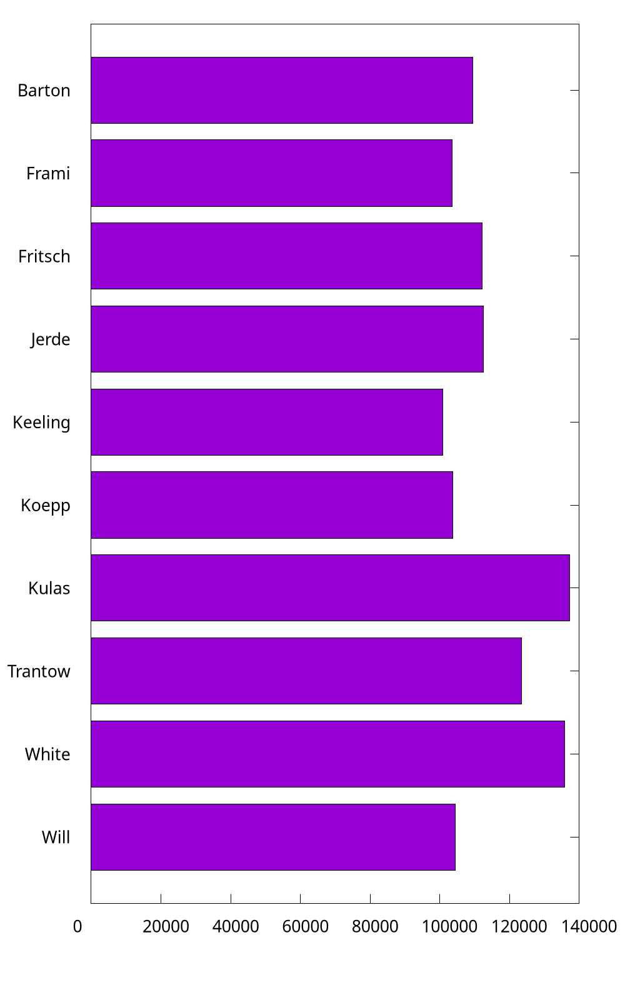
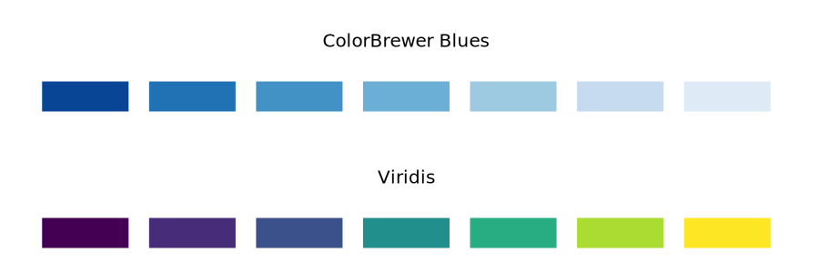

Introduction
Nowadays, people may think Gnuplot is an old, awkward graphing utility. Pace to those comments, I still enjoy the flexibility brought by gnuplot.
In the Unix tradition, gnuplot is a simple tool, doing (mostly) one thing, and doing it very, very well.
In this book, I would like to reinvent the wheels by reintroducing the tutorial of Matplotlib.
Disclaimer: I have to admit that Python is great, and Matplotlib is powerful. So this book is intended to serve as a reference for people who want to try something new.
Matplotlib can be well integrated with other awesome libraries (e.g., numpy and pandas) in Python, so it is user-friendly for Python developers and researchers, especially in the domain of machine learning. On the other hand, many developers and researchers just want to plot and visualize their experimental results. To this end, a lightweight plot utility is in demand, and I think gnuplot is born to do so.
Data and code of this book can be found in GitHub.
Introductory
These tutorials cover the basics of creating visualizations with gnuplot, as well as some best-practices in using the tool effectively.
Note that I will use the default terminal qt on my macOS, and those figures (.svg) are exported by gnuplot GUI windows by invoking the load command in gnuplot's prompt. As for the output in other formats (e.g., eps, pdf and tex), I will point out the terminal explicitly in the context.
Basic Usage
This article is adapted from Basic Usage.
All scripts in this article can be found
script/basic_usage.
This tutorial covers some basic usage patterns and best practices to help you get started with gnuplot.
Once gnuplot is installed, you can use it in either interactive or batch mode. As for the interactive, it can usually be invoked by issuing the gnuplot command at the shell prompt. Once launched, gnuplot displays a welcome message and then replaces the shell prompt with a gnuplot> prompt. Anything entered at this prompt is interpreted as gnuplot commands until you issue an exit or quit command,
Also, the scripts for plotting can be stored in a plain text file (usually suffixed with .gp), and it can be executed by
gunplot> load "<file-name>.gp"
Note that both single quote and double quote are accepted.
A simple example
The most important command in gnuplot is plot. To draw a line using several points:
$data << EOD
1 1
2 4
3 2
4 3
EOD
plot $data with lines

As you can see, the default style of gnuplot is different from that of Matplotlib. For example,
- The line is thinner.
- The font of labels on axes is smaller.
- The legend is displayed.
- ...
Only a few extra commands are required to custom those styles. For example, unset key means "do not display the legend". If you prefer to some style for your plotting, you can save these configs in a file for reuses. See more at How to reuse gnuplot's styles.
Parts of a Figure
Here are the components of a gnuplot Figure.

The code for above can be found at anatomy.gp.
Types of inputs to plotting functions
Plotting command (plot) expects a file or a mathematical function as the input. For example, the plot sin(x) is able to output a figure of sin whose default range of x is from -10 to 10. In practice, the input data is usually stored in a file.
In my opinion, it is more common to read external data file for visualization tasks, and gnuplot's way to plotting is more ergonomic in practice, because we can separate data from plotting logics and will not concern about the reading step.
To plot the scatter figure as shown here, we can prepare the data containing coordinates, colors and sizes (stored in data/scatter.dat):
# a(x) c(color) d(size) b(y)
0 49 134.685132 -2.961981
1 20 131.086051 4.801881
2 44 51.744207 -6.497267
3 20 1.665814 -11.207766
Those lines started with # are comments in gnuplot, and they are ignored in the input data and script file. And the following code (scatter.gp) can output the similar plot:
unset key
set xlabel 'entry a'
set ylabel 'entry b'
set xrange [-5:55]
plot 'scatter.dat' using 1:4:($3/30.0):2 \
with points pt 22 ps variable lc variable
Note that the size (3rd column) generated is too large for gnuplot, so it is divided by 30. And we can add a backslash (\) to write the command in multiple lines. When using the keywords pt (short for pointtype), ps (short for pointsize), or lc (short for linecolor) in a plot
command, the additional keyword variable may be given instead of a number.
In this case the corresponding properties of each point are assigned by additional columns of input data.
Coding styles
As for gnuplot, there is only one style: command. To create the simple plot:
set title 'Simple Plot'
set xrange [0:2]
set xlabel 'x label'
set ylabel 'y label'
plot x t 'linear', x**2 t 'quadratic', x**3 t 'cubic'

Again, the default style of gnuplot may be not what you want. Here are some instructions about how to output an image like the one as shown here:
- X ticks step 0.5:
set xtics 0,0.25,2 - Y ticks step 2:
set ytics 0,2,8 - X ticks label with two digits:
set format x '%.2f' - The position of legend:
set key box reverse Left left - The size ratio:
set size ratio 2.7/5
Because gnuplot always plots according to xrange if possible, we have to use a small trick to make some blank space. The main idea is to return invalid value for those space:
f(x) = (x < 0 || x > 2 ? 1/0 : x)
The final code (simple_plot.pg) would generate a figure like the following:

Wow, a ton of code is required to make the figure look pretty! The good news is that writing the scripts in gnuplot is like building with blocks, and everything here is straightforward; the bad news is that some default styles are a little annoying, and we have to set them manually.
From now on, I will not apply the trick to make extra space in the X axis, because in my opinion, this is just an implementation choice. By the way, the figures shown in Matplotlib manual are generally scaled to 2.7/5, and we don't set the size ratio manually. If you want to learn how to scale the figure properly, please refer to Cookbook: Item 1.
Functions and styles
Gnuplot is NOT a programming language, so you cannot make a helper function to lessen your repeated workload. Fortunately, gnuplot has several features which can simplify the script. On the other hand, gnuplot offers mathematical style function definitions. For example, we can define a Gauss function in gnuplot:
gauss(x) = exp(-pi*x*x)
, where exp is the built-in logarithmic function and pi is the built-in constant for π.
On the other hand, gnuplot can levitate our labors by setting styles. For example, suppose the plots for \( x \) and \( x^2 \) has the same style, then we can define a common style for them:
set style line 1 dt 2 lw 4 lc rgbcolor 'blue'
plot x ls 1,x**2 ls 1
The detail of the usage of styles can be found at Styling Artists.
Styling Artists
In the plot below we manually set the linecolor, linewidth, and linetype of a line.
Experienced users of gnuplot like to use the abbreviations. For example,
lcis short for linecolor,lwis short for linewidth, andltis short of linetype. A complete list of the common used abbreviations can be found at Appendix.
The data (data/artists_data.data) consists of two columns random numbers.
set style line 1 dt 2 lw 4 lc rgbcolor 'blue'
set style line 2 dt 4 lw 2 lc rgbcolor 'orange'
plot 'artists_data.dat' using 1 smooth cumulative ls 1, \
'' using 2 smooth cumulative ls 2
Let me elaborate on the usage. The fist line set style line <index> <some properties>, where index can be referred later. So what does the number of each property mean? In gnuplot, each number has its unique meaning, and you can check it by invoking the test command:

As we can see, dt 2 is short for dashtype 2, where 2 means ---; lw 4 is short for linewidth 4; lc is short for linecolor. In the code above, we use lc rgbcolor "blue" to specify a color, and we can also use a magic number, saying, lc 30, where 30 also means blue. Please check the long list carefully on the right side as illustrated in the figure above.
The first parameter of plot is the file name, and using 1 means selecting the first (1st) column. Generally speaking, when it comes to a 2D figure, we need to provide two columns, indicating X and Y respectively, and if only one column is given, then gnuplot considers it as Y, and X is implicit as the index number (starting from 0). To plot multiple lines, we separate them with a column (,), and we should not repeat the plot command again. We can specify the file name again, but it will be the previous one by default if it is an empty string ("" or '').
One more thing, the option smooth cumulative is used to achieve the same effect as np.cumsum() does.
Colors
Gnuplot has a very flexible array of colors that are accepted for most Artists, and users have multiple ways (including a number, an RGB name, and RGB hex value) to specify the colors. Some Artists will take multiple colors. i.e. for a circle plot, the edge of the markers can be different colors from the interior:
set style fill solid border lc 'black'
plot '../data/artists_data.dat' using 1:2 with circles fc "greenyellow"

The first line is to set the fill style, and 0.6 is the degree of transparency. Note that, fc, short for fillcolor only accepts a colorspec, and we cannot pass a plain number to it. You can check all color names by show colornames command.
Linewidths, linestyles, and pointsizes
The line width and point size are multipliers for the current terminal's default width and size, so you'd better check the styles by invoking the test command. By the way, the concept of MarkerStyle in Matplotlib is called pointtype (the abbreviation form is pt) in gnuplot. For example, pt 5 is a filled square.
plot '../data/artists_data.dat' using 1 with points pt 5 ps 2 lc 7 t 'data 1', \
'' using 2 with points pt 11 ps 2 t 'data 2'
There is no pointcolor in gnuplot! In order to set the color a point, you can use the
lc(short for linecolor).
Labelling plots
Axes labels and text
set xlabel, set ylabel, and set title are used to add text in the indicated locations. Text can also be directly added to plots using set label command.
First, we prepare a normal distribution dataset (data/normal.dat) using the Python code:
mu, sigma = 115, 15
x = mu + sigma * np.random.randn(10000)
set title "Aardvark lengths\n (not really)"
set xlabel 'Length [cm]'
set ylabel 'Probability'
set label "{/Symbol m} = 115, {/Symbol s} = 15" at 80,600
unset key
set xrange [55:175]
set grid
set style fill solid 0.75
plot 'normal.dat' using 1 bins=50 with boxes fc '#4070a0'

The complete code can be found at labels.gp. Note that you have to use double quotes for the escape character \n. The basic syntax of set label is:
set label {<tag>} {"<label text>"} {at <position>}
Here, the position is the location of X and Y on the plot in terms of the coordinates. To display the mathematical symbols, we use the special {/Symbol} font, where m, short for Greek letter mu, is \(\mu\), and s, short for Greek letter sigma, is \(\sigma\). Readers can refer to Greek Letters for a complete list.
We can further customize other properties such as text size and text color. For example, we use font ",15" to specify the size of font to 15 for the terminal.
Using mathematical expressions in text
The {/Symbol} also supports simple mathematical notations, such as the subscript. For example x^2 means \(x^2\), {/Symbol s}_2 means \(\sigma_{2}\). However, it would be troublesome to write complex mathematical equations with {/Symbol}, and instead you should take the leverage of Latex. Readers can refer to How to write complex mathematical equations.
Annotations
We can also annotate points on a plot by using setting arrow and label:
f(x) = cos(2*pi*x)
unset key
set xrange [0:5]
set yrange [-2:2]
set samples 1000
set arrow from 2.3,1.3 to 2,1 filled
set label 'local max' at 2.3,1.3
plot f(x)

The basic usage an arrow is set arrow from <position> to <position>, and gnuplot offers a large amount of options to customize its styles, such as its head, fill style, and border. For example, as for the fill style, you can use one from filled | empty | nofilled | noborder. Like the label, position here means the X,Y coordinate on the plot.
Like many other Linux tools, gnuplot is shipped with a detailed documentation, and users can invoke
help <command>to ask for help. For example, you can access gnuplot’s built-in reference documentation about how to set arrow by typinghelp set arrow.
Keys
The concept legend in Matplotlib is called key in gnuplot.
plot 'artists_data.dat' using 1 with lines t 'data1', \
'' using 2 with lines t 'data2'
The keys are specified by t (short for title). Keys in gnuplot are quite flexible in layout and placement.
Axis scales and ticks
Each Axes has two (or three) axis representing the x- and y-axis. These control the scale of the axis, the tick locators and the tick formatters.
Scale
In addition to the linear scale, gnuplot supplies non-linear scales, such as a log-scale. Here we set the scale manually:
set multiplot layout 1,2
unset key
f(x) = 10**x
unset logscale y
plot 'artists_data.dat' using (f($2)) with lines
set logscale y
plot 'artists_data.dat' using (f($2)) with lines
The first line is to set a multiplot mode with 1 row and 2 columns. Some readers may be not satisfied with formatting of labels in log-scale, and prefer the \( 10^i \) format. To achieve this, we can specify the format as log:
set format y "10^{%L}"
The complete code can be found at scales.gp.

The scale sets the mapping from data values to spacing along the Axis, so it is also possible to set log scale for X.
Tick locators and formatters
Each Axis has a tick locator and formatter that choose where along the Axis objects to put tick marks. A simple interface to this is set xtics (Of course, we can also use set ytics to custom the ticks of Y).
set multiplot layout 2,1
unset key
set title 'Automatic ticks'
plot 'artists_data.dat' using 2 with lines
set title 'Manual ticks'
set ytics -1.5,1.5,1.5
set xtics ("zero" 0, "30" 30, "sixty" 60, "90" 90)
plot 'artists_data.dat' using 2 with lines

The code above shows two basic usages of set xtics (set ytics) command.
set xtics <start>, <incr> {,<end>}
set xtics ({"<label>"} <pos> {<level>} {,{"<label>"}...)
So set ytics -1.5,1.5,1.5 means the tic starts from -1.5, and ends to 1.5, and the step is 1.5 (always positive). As for the second usage, the default level is 0, indicting the major tick, and level 1 means the minor tick. So "zero" 0 means to display zero at position 0.
By the way, the ticks in gnuplot are drawn inwards, and we can use out to set it be outwards.
unset key
set tics out nomirror
plot 'artists_data.dat' using 2 with lines

As for tics, it's default option mirror tells gnuplot to put unlabeled tics at the same positions on the opposite border, and nomirror does what you think it does.
Plotting dates and strings
Gnuplot can handle plotting arrays of dates and arrays of strings, as well as floating point numbers. These get special locators and formatters as appropriate.
For dates, gnuplot offers a set of command for processing time series data. The classic approach uses set _data, set timefmt and set _tics format, which let you parse and arbitrary data/time information. This is gnuplot’s most flexible and powerful method of handling timestamps.
The dataset can be found data/date.dat, which is generated by numpy.
2021-11-15 00:00:00 0.047934
2021-11-15 01:00:00 0.811732
2021-11-15 02:00:00 2.66169
...
unset key
set xdata time
set timefmt "%Y-%m-%d %H:%M:%S"
set xtics format "%m-%d"
plot "date.dat" u 1:3 w lines lw 1.5

The second line set xdata time is to set the data on X as time. The third line set timefmt <format string> is to specify the time format, where %Y means a 4-digit year, %m means month, %d means a day of a month, %H means an hour, %M means the minute. You can use help set timefmt to have a look at the document. The fourth line is to set the format of the tics on X, %m-%d means the month and day are displayed.
Note that the supported format strings for
set timefmtandset xtics formatare not always the same. For example,%Fis a shorthand for%H:%M:%S, and it is only available forset _tics format. Readers can refer to Time Format for details.
For strings, we get categorical plotting. We prepared a dataset at data/strings.dat:
turnips 0.4
rutabaga 0.42
cucumber 0.57
pumpkins 0.44
unset key
set yrange [0:0.6]
set ytics 0,0.1,0.6
set xrange [-1:4]
set style fill solid 0.5
set boxwidth 0.8
plot "strings.dat" using 2:xticlabels(1) with boxes

Here we are using boxes, and it is also possible to plot this using histograms. But histograms are mainly used to plot multi-group data (see more at Revisit bar chart).
As for a 2D box plotting, only one dimension is required, and we can use an extra column to be the ticks labels. So 2:xticlabels(1) means plotting with the second (2nd) column and its first (1st) column is used as ticks labels on X. By default, each box extends to touch the adjacent boxes (in other words, width is 1), and set boxwidth is to set its width.
Additional Axis objects
Plotting data of different magnitude in one chart may require an additional y-axis. As for a 2D figure in gnuplot, we are, in fact, plotting on X1 (bottom) and Y1 (left). The mirror of X1 is X2, which is located on the top, and the mirror of Y1 is Y2, which is located on the right side. Therefore, each axis can have a different scale and tick format in gnuplot.
f1(x) = 500 * x
f2(x) = cos(2 * pi * x)
set xrange [0:5]
set samples 1200
plot f2(x) w lines axis x1y1 lw 2 t 'Sine(left)', f1(x) w lines axis x1y2 lw 2 t 'Staight(right)'
Here axis x1y1 means plotting on X1 and Y1, while axis x1y2 means plotting on X1 and Y2. And we can also set the ticks labels on X2 via set x2label:
f(x) = cos(2 * pi * x)
set link x2 via x*180/pi inverse x*pi/180
set x2tics 0,50,300
set xtics nomirror
set xrange [0:5]
set samples 1200
set xlabel 'Angle [°]'
set x2label 'Angle [rad]'
plot f(x) w lines axis x1y1 lw 2
Note that the set link command is introduced by gnuplot 5.0, which is used to establish a mapping between the x and x2 axes, or the y and y2 axes.
Color mapped data
Often we would like a color map. Gnuplot has a number of plot types that do this. Since color maps are based on 3D data, we need to understand the 3D data format in gnuplot (see more at 3D Data). Here we use data (data/z.txt) which is generated by Python in the matrix format:
unset key
set xrange [0:128]
set yrange [0:128]
set cbrange [-1:1]
set cbtics scale 0
set palette defined (-1 'blue', 0 'white', 1 'red')
set tics nomirror out
plot 'z.txt' matrix with image

Palettes are very flexible in gnuplot, and you can refer to Palettes for more details. Here we use set palette defined to define some colors at specific points; set cbrange (cb is short for color range) command sets the range of values which are colored using the current palette. The set cbtics command controls major (labeled) tics on the color box axis, and the option scale 0 means no tics.
To draw a contour, we can use set table to output its contour (cont.gp):
set contour base
unset surface
set table 'cont.dat'
splot 'z.txt' matrix
splot is the command for drawing 3D plots. Then e can draw the contour and the data at the same time:
unset key
set xrange [0:128]
set yrange [0:128]
set cbrange [-1:1]
set cbtics scale 0
plot '../../data/z.txt' matrix with image, '../../data/cont.dat' with lines lw 1.5
Here, we use the default palette in gnuplot, and you can check how it looks like by invoking test palette command.
The last example is to plot a scatter with color:
set palette defined ( 0 'blue', 1 'grey', 2 'red' )
plot "cloud" u 1:2:3 palette pt 7 ps 2

As for data/cloud, its first two columns determine the location of each point, and the third column is used to find the point’s color by mapping the numeric value into the provided palette. The color of each point or line segment is found by mapping the values of an additional data column into the palette, using the keyword palette in the plot command.
Working with multiple Figures and Axes
We have shown the usage of set multiplot layout, and we provide one more example (multi.pg), which is from gnuplot demo script: layout.dem:

Note that for academical papers, multiple figures are mainly plotted with subfigure in Latex, so we do not think it is worthwhile to explore this feature in gnuplot.
More Tutorials
Matplotlib provides both the pyplot API and the object-oriented API, but gnuplot only offers command style, which is more like the pyplot API of Matplotlib. So, generally, this article has no much difference with Basic Usage, and I only show some script to plot these figures shown in Pyplot tutorial.
Readers can skip most content of this section and jump to Save plot directly if they have already understood Basic Usage because most of the usages and concepts are repeated.
The script in this section can be found
script/tutorials.
Intro to plot
plot is the most important command in gnuplot.
$y << EOD
1
2
3
4
EOD
set ylabel 'some numbers'
plot $y with lines
You may be wondering why the x-axis ranges from 0-3 and the y-axis from 1-4. If you only provide one column for plot, gnuplot assumes it is a sequence of y values, automatically generates the x values (starting from 0) for you.
To plot x versus y, you can write:
$data << EOD
1 1
2 4
3 9
4 16
EOD
plot $data u 1:2 w l

Note that we are using the abbreviations:
u: usingw: withl: lines
Formatting the style of your plot
It is very flexible to set the color and line type of the plot.
$data << EOD
1 1
2 4
3 9
4 16
EOD
unset key
set xrange [0:6]
set yrange [0:20]
set xtics 0,1,6
set ytics 0,2.5,20
set format y "%.1f"
plot $data u 1:2 w p pt 7 lc 'red' ps 2

Here we specify the lt (linetype), pt (pointtype), lc (linecolor) and ps (pointsize). And we also set the ranges and tics for X and Y.
The example below illustrates plotting several lines with different format styles:
unset key
set xrange [0:5]
set samples 25
set yrange [-1:120]
set ytics 0,25
plot x w l dt 2 lw 3 lc 'red', \
x**2 w p pt 5 ps 1.5 lc 'blue', \
x**3 w p pt 9 ps 2 lc '#008000'

Plotting with keyword strings
Gnuplot does not support such feature, but readers can refer to Types of inputs to plotting functions to learn how to plot the scatter with varying sizes and colors.
As we can see, we can specify the column using $i for plot, and this feature is like keyword strings in Matplotlib.
Plotting with categorical variables
set terminal qt size 900,300 font ',10'
set multiplot layout 1,3 title 'Categorical Plotting' font ',14'
unset key
set xrange [-1:3]
set yrange [0:110]
set xtics ('group\\\_a' 0, 'group\\\_b' 1, 'group\\\_c' 2)
set tics nomirror out
$y << EOD
1
10
100
EOD
set style fill solid
set boxwidth 0.8
plot $y with boxes
plot $y with points pt 7 ps 2
plot $y with lines lw 2
unset multiplot
Note that the qt terminal is in enhanced text mode, so we need to add extra \\\ to display the underscore. Another solution is to set noenhanced.
Controlling line properties
Lines have many attributes that you can set: linewidth, dash style, antialiased, etc:
set linetype 1 lc rgb "dark-violet" lw 2
Working with multiple figures and axes
set multiplot layout 2,1
unset key
set linetype 1 lc "black" lw 2
set linetype 2 lc rgb '#E41A1C' dt 2 lw 2 # red
f(x) = exp(-x) * cos(2*pi*x)
plot 't1.dat' using 1:(f($1)) with points pt 7 ps 1.5 lc 'blue', f(x) with lines ls 1
g(x) = cos(2*pi*x)
plot [0:5][] g(x) with lines ls 2

Working with text
set terminal qt font ',16'
set title "Histogra of IQ"
set xlabel 'Smarts'
set ylabel 'Probability'
set label '{/Symbol m} = 100, {/Symbol s} = 15' at 60,600
unset key
set xrange [40:160]
set grid
set style fill solid 0.75
bin(x,s) = s*floor(x/s)
binc(x,s) = s*(floor(x/s)+0.5)
set boxwidth 120/50.
stats 'smart.dat' u 1 noout
plot 'smart.dat' using (binc($1,120/50.)):(1./(120/50.*STATS_records)) smooth frequency with boxes fc '#4DAF4A'

The script (smart.gp) uses a trick to compute the probability, because it would display frequency for given bins.
Horizontal bar
In gnuplot, there is no delicate way to draw a horizontal bar directly, and you have to use boxxyerror to achieve the similar effect, while it can be done easily with the barh function in Matplotlib. In what follows, we are going to plot the figure in The Lifecycle of a Plot. This subsection is adapted from Horizontal bar chart in gnuplot.
set yrange [0:*]
set style fill solid
unset key
myBoxWidth = 0.8
set offsets 0,0,0.5-myBoxWidth/2.,0.5
plot $data using 2:0:(0):2:($0-myBoxWidth/2.):($0+myBoxWidth/2.):($0+1):ytic(1) \
with boxxyerror lc var
The complete script can be found at barh.gp.
Save plot
Gnuplot provides a variety of formats for outputs by setting its terminal1. In practice, we would like to run a script and output the figure in a batch mode.
$ gnuplot foo.gp
PNG
set terminal pngcairo size 1600,1200 enhanced font 'Verdana,16'
set output 'barh_png.png'
The complete script can be found at barh_png.gp. Here we set the terminal to pngcairo, and then specify its size in pixels and its font type and font size. You can check the documentation by typing help set terminal pngcairo. For example, the transparent option would make output figure transparent.
set terminal pngcairo transparent size 1600,1200 enhanced font 'Verdana,16'
EPS
set terminal postscript eps size 10,8 enhanced color font 'Helvetica,18'
set output 'barh_eps.eps'
The complete script can be found at barh_eps.gp. Here we set the terminal to postscript with eps option. Note that the unit of size is inch by default.
set terminal pdfcairo size 10,8 enhanced font 'Verdana,24' rounded
set output 'barh_pdf.pdf'
The complete script can be found at barh_pdf.gp. Here we set the terminal to pdfcairo. Note that the unit of size is inch by default.
The
SVG
set terminal svg size 1600,1200 enhanced font 'Helvetica,18'
set output 'barh_svg.svg'
The complete script can be found at barh_svg.gp. Here we set the terminal to svg.
And we can also output .tex by epslatex terminal. See more at How to write complex mathematical expressions.
1 Reader can refer to Complete list of terminals.
More Examples
In this section, we show more example in gnuplot.
The script in this section can be found
script/examples.
Basic area chart
set style fill solid 0.4 noborder
plot $data with filledcurves y=0 lc rgb "forest-green"
The key point of the code (area_chart.gp) is with filledcurves y=0, because we would like to set a line at y=0 (it is also fine to use y1=0).

In addition, if the plot target is a function, the following code is also feasible:
set style fill solid 0.4 noborder
set style function filledcurves y=0
set xrange [0:3]
plot sin(x) lc rgb "forest-green"
The code above (area_chart2.gp) uses something new: set style function which changes the default plotting style for function plots

Stacked area chart
As for a stacked area chart, the code has no much difference (stacked_area.pg):
set style fill transparent solid 0.5 noborder
plot $data u 1 with filledcurves y=0, \
$data u 2 with filledcurves y=0, \
$data u 3 with filledcurves y=0

Revisit bar chart
We have already shown how to use with boxes to plot categorical items in Plotting dates and strings, but for multi groups, a histogram is preferred. In the following, we use the provided energy file. This part is adapted from gnuplot 5 by Lee Phillips.
# Country Fossil Hydro Nuclear "Other renewable"
Mexico 72 18 3 7
US 71 9 8 12
...
Note that the specific value shown above are factitious.
set style data histogram
set style fill solid border -1
plot "energy" u 2 title "Fossil", \
"" u 3 title "Hydro", \
"" u 4 title "Nuclear", \
"" u 5:xtic(1) title "Other renewable"
The complete code can be found at energy.gp. Gnuplot uses the "histogram" style for bar charts as well as true histograms. Because the country names (column 1) are expected to be labels on X, we use xtic (short for xticlabels) command to select the 1st column.
By the way, we can use set style histogram cluster gap <n> to set the gap between clusters. The default gap is 2. The following gap is 1, and as you can see, it has a slightly wider box.

Cookbook
"How-do-do" style cookbook for gnuplot. Note that each item has no particular order.
All scripts in this article can be found
script/cook.
Item 1-30
1. How to resize the figure
Command set size ratio can set the radio of height/width. However, this won't affect the size of figure itself, and it will only change the ratio the plotting area. To remove the extra space, we can use size <width>, <height> when set terminal.
Note that the
sizehas different meanings for differentterminal. See more at Save plot.
For example, the following code is used to plot the time series data like Plotting dates and strings:
set terminal pngcairo transparent size 1000,540 enhanced font 'Verdana,16'
set output 'date.png'
unset key
set xdata time
set timefmt "%Y-%m-%d %H:%M:00"
set xtics format "%m-%d"
plot "date.dat" u 1:3 w lines lw 1.5

2. How to write complex mathematical expressions
We can set Latex as the output in gnuplot, and thus this feature makes it very convenient to write complex mathematical expressions.
set term epslatex standalone color
set samples 1000
set output 'example.tex'
plot sin(x) title '$\sigma \frac{3}{4}$'
The code can be found at math.gp. Here, we set the term (short for terminal) as epslatex, and the remaining options:
standalone: The output is a standalone .tex file. Otherwise, we can only include the output in another Latex file.color: As the name implies, the output will always be colorful. Otherwise, some lines may be in monochrome mode.
The third line is to specify the output file. In fact, another .eps file will also be generated (you do not have to specify its name), where .tex manages the mathematical expression, and .eps accounts for the plotting itself. We can run this script by gnuplot math.gp in the shell:
$ gunplot math.gp
$ ls
$ example-inc.eps example.tex math.gp
After that, we can compile it to PDF via Latex.
I also wrote a helper script (tex2eps.sh) to generate a standalone .eps figure from .tex. Suppose there are example-inc.eps and example.tex in the current folder.
$ ./tex2eps.sh example.tex
Then it would generate a standalone .eps file containing both plot itself and mathematical expressions.
3. How to reuse gnuplot's styles
This article is adapted from How to make gnuplot charts look more visually appealing?. As we have already seen, the default style of gnuplot is not appealing enough, and we often need custom configs, such as lw (linewidth). Readers can refer to gnuplot-palettes for more useful resources.
Some people may would like to a standalone script. They may collect some fancy styles, and copy these styles into their current working script.
# define axis
# remove border on top and right and set color to gray
set style line 11 lc rgb '#808080' lt 1
set border 3 back ls 11
set tics nomirror
# define grid
set style line 12 lc rgb '#808080' lt 0 lw 1
set grid back ls 12
# color definitions
set style line 1 lc rgb '#8b1a0e' pt 1 ps 1 lt 1 lw 2 # --- red
set style line 2 lc rgb '#5e9c36' pt 6 ps 1 lt 1 lw 2 # --- green
The complete script can be found at fancy.gp.
You can also store these styles in an external file. Here we prepare another style file which configs the line, border, ticks, border and grid, and then we can load it in our script:
load "style"
set terminal qt font "Alegreya, 14" size 800, 580
set xlabel "x"
set ylabel "f(x)"
set grid
set key right top
set xrange[0:6.28]
set yrange[-1:1]
plot sin(x) w l ls 1, cos(x) w l ls 2
The same technology is also used in Loading palette.
By the way, one can also rename style to .gnuplot and put it in her home directory (it works on Linux and macOS). Then gnuplot would automatically load this file.
4. How to plot stacked bar charts
We reuse the example in Revisit bar chart, and try to plot it as a stacked bar.
set style data histogram
set style histogram rowstacked
set boxwidth 0.8 relative
In the code (stacked.gp), we use set style histogram rowstacked to set the histogram rowstacked, and the default style corresponds to set style histogram clustered gap 2.
Note that to make some space between boxes, we use the syntax set boxwidth {<width>} {absolute|relative}. By default, adjacent boxes are extended in width until they touch each other. Relative widths are interpreted as being a fraction of this default width, and this option is widely used.
5. How to plot horizontal bar charts
As we mentioned in Horizontal bar, we can use boxxyerror to plot a horizontal bar. Here we use another trick: by rotating (hbar.gp).
set bmargin 4
set tmargin 2
set style fill solid border -1
set boxwidth 0.8
set y2range [0:*]
set y2tics
set xtics offset 0,-0.5 right
set xtics rotate by 90
set y2tics rotate by 90
set y2tics offset 0,-1
And we also have to rotate the output by hand.
It is a bit complicated. So I still recommend the method introduced in Horizontal bar.
6. How to customize borders?
Sometimes, we may like to keep the X1 (bottom) and Y1 (left) only. We add the code in the following into stacked.gp:
set border 3

As shown in How to reuse gnuplot styles, it is also possible to set borders' other properties, such as linetype, linecolor, and linewidth. In 2D plots the border is normally drawn on top of all plots elements (front). If you want the border to be drawn behind the plot elements, use set border back. Then, what does 3 mean here? The borders are encoded in a 12-bit integer: the four low bits control the border for plot:
- 1: bottom
- 2: left
- 4: top
- 8: right
Therefore, 3 is the sum of 1 and 2, indicting bottom and left, respectively.
7. How to customize keys?
Most of the time, we use unset key to not show the key in previous examples. In this item, we discuss how to customize key. Readers can type help set key for details.
First, as for the position, you can choose {left | right | center} {top | bottom | center} (default is right top). Secondly, as for how they are arranged, you can choose {vertical | horizontal} (default is vertical). Sometimes, we would like to add a box using box option.
set key top left box
set xrange [0:1]
plot x ls 1 t 'x', x**2 ls 2 t 'x^2', x**3 ls 3 t 'x^3'

The previous example looked a bit crowded inside its box. We can add to the width and height of the box by adding some keywords to the command:
set key top left box width 1 height 1
One problem with the key in all the previous examples was that the default length of line used was not long enough to make clear which dash pattern was intended. This can be adjusted by samplen:
set key top left box width 1 height 1 samplen 12
If you prefer the names to come after the curve samples, use the keyword reverse; this goes well with the Left keyword, which justifies the text to the left:
set key top left box width 1 height 1 reverse Left samplen 10

If the number of keys is growing, you can use maxrow keyword to control the maximum amount of rows.
8. How to specify color schemes?
This item, in fact, is a specific topic of How to reuse gnuplot's styles, and here, we focus on color schemes. Readers can refer to Paul Tol's Notes and "Best" series of colors to use for differentiating series in publication-quality for more background knowledge. Color schemes are also discussed in Chapter 3.
This item is adapted from Color maps from colorbrewer.
If you are looking for nice color maps which are especially prepared to work with cartographic like plots you should have a look at colorbrewer2.org. Thanks to Anna Schneider there is an easy way to include them (at least the ones with eight colors each) into gnuplot. Just go to her gnuplot-colorbrewer github site and download the color maps.
This website provides a complete nice color scheme catalogue, and we can reuse them easily. For example, in order to use the colorblind palette by Masataka Okabe and Kei Ito, I prepared a style file okabe_ito.plt (color.gp).
load 'obake_ito.plt'
plot for [ii=1:8] f(x,ii) ls ii lw 2
9. How to plot discrete function?
Since gnuplot is Not a programming language, it lacks many useful features found in Python/R/Matlab. For example, to plot the histogram of flipping a coin until we see a head, the following code is written with Matplotlib:
import numpy as np
import matplotlib.pyplot as plt
p = 1/2
n = np.arange(1,11)
X = np.power(p,n)
plt.bar(n,X)

When it comes to gnuplot, we can resort to for manually to plot a discrete function:
f(x) = 0.5**x
array A[10]
do for [i=1:10] {
A[i] = f(i)
}
plot A using 1:2 with boxes
The complete code can be found at discrete.gp. As for array in gnuplot,
The name of an array can be used in a
plot. This is equivalent to providing a file in which column 1 holds the array index (from 1 to size), column 2 holds the value of real(A[i]) and column 3 holds the value of imag(A[i]).
Fundamentals of Data Visualization
In this chapter, I will replot all figures shown in Fundamentals of Data Visualization.
Tutorials for plotting software typically focus on how to achieve specific visual effects rather than explaining why certain choices are preferred and others not.
Also, I would also share my understandings when reading this book. Quoted from the author of Tikz,
The only mistakes in typography are things done in ignorance.
I think it also holds true in plotting.
Introduction
A data visualization first and foremost has to accurately convey the data. It must not mislead or distort. If one number is twice as large as another, but in the visualization they look to be about the same, then the visualization is wrong. At the same time, a data visualization should be aesthetically pleasing.
For example, 3D plotting is often considered as a bad choice because it may distort the data.

This figure above is from Guidelines on Graphics. As we can see, the relative sizes in a 3D-pie-chart are very strongly distorted.
Ugly, bad, and wrong figures

To generate a reasonable visualization with no major flaws:
$data << EOD
A 3
B 5
C 4
EOD
unset key
set border 3
set tics out nomirror
set style data histogram
set grid
set style fill solid 0.9
set yrange [0:5]
set ylabel 'Value'
set boxwidth 0.8
plot $data u 2:xtic(1) with boxes fc '#56B4E9'
The default background grid line is good enough, so I did not specify its style. By the way, luckily I think it would be in fact hard to plot such bad, ugly, and wrong figures given the default settings with gnuplot.
Visualizing data: Mapping data onto aesthetics
Aesthetics and types of data
Readers can refer to the following figure to understand the basic graphical elements in gnuplot: position, shape, size, color, line width, line type (aesthetics.gp). And readers can refer to test.svg for more information.
{kind=link}
In gnuplot, the line type is called
dt(short for dash type).
If we would like to plot a figure whose X and Y are crossed at (0, 0), we can use the code (zeroaxis.gp):
unset key
unset border
unset xtics
unset ytics
set zeroaxis lt -1 lw 2
set arrow 1 from 1,0 to 2,0 nofilled size 0.1,45,60 lw 2
set arrow 2 from 0,1 to 0,2 nofilled size 0.1,45,60 lw 2
set label 1 "x" at 1.9,-0.2 font ',40'
set label 2 "y" at -0.2,2 font ',40'
plot [-2:2][-2:2] 5
Here we use set zeroaxis to achieve this.
Scales map data values onto aesthetics
A scale defines a unique mapping between data and aesthetics. Importantly, a scale must be one-to-one, such that for each specific data value there is exactly one aesthetics value and vice versa (scales.gp).
Let’s put things into practice. We prepared the monthly precipitation data from NOAA, and use smooth sbezier option to make it smooth. Here we map precipitation onto the y axis, month onto the x axis, location onto color, and visualize these aesthetics with solid lines.
set datafile separator ","
set xdata time
set timefmt "%m"
set xtics format "%b"
unset mxtics
plot 'city.csv' u 2:3 smooth sbezier lw 3, \
'city2.csv' u 2:3 smooth sbezier lw 3, \
'city3.csv' u 2:3 smooth sbezier lw 3,
The complete code can be found at precip.gp.
Because now the key variable of interest (precipitation) is shown as color, we need to show sufficiently large colored areas for the color to convey useful information. Therefore, for this visualization I have chosen squares instead of lines, one for each month and location, and I have colored them by the precipitation for each month (precip2.gp):
Coordinate systems and axes
For regular 2d visualizations, two numbers are required to uniquely specify a point, and therefore we need two position scales. These two scales are usually but not necessarily the x and y axis of the plot.
Cartesian coordinates
The following is a standard cartesian coordinate system (coor.gp):
Data values usually aren’t just numbers, however. They come with units. A Cartesian coordinate system can have two axes representing two different units. This situation arises quite commonly whenever we’re mapping two different types of variables to x and y. In gnuplot, this is done by set size ratio and size option of the terminal (coor1.gp).
Nonlinear axes
The most commonly used nonlinear scale is the logarithmic scale or log scale for short. The following figure shows the numbers 1, 3.16, 10, 31.6, and 100 placed on linear and log scales (log.gp).

As an example, I have taken the number of inhabitants in each county in Texas and have divided it by the median number of inhabitants across all Texas counties (tx.gp).
Color scales
Color as a tool to distinguish
We frequently use color as a means to distinguish discrete items or groups that do not have an intrinsic order, such as different countries on a map or different manufacturers of a certain product. In this case, we use a qualitative color scale. Many appropriate qualitative color scales are readily available. The following figure shows three representative examples (color.gp).

- Okabe Ito is a color-blind safe qualitative colorscale.
- ColorBrewer Dark2 is s provided by the ColorBrewer project.
Unfortunately, gnuplot does not provide built-in method to specify a color scale, and you have to do some manual work. Readers can refer to Color maps from colorbrewer and Item 8 for more instructions. The following figure is an example of Paired.plt provided by ColorBrewer (pair.gp):
f(x,i) = cos(x - 1.0 + i/10.0)
load 'Paired.plt'
plot for [ii=1:8] f(x,ii) ls ii lw 2

Cool! A nice color scheme!
As an example of how we use qualitative color scales, consider the following figure. It shows the percent population growth from 2010 to 2020 in China (population.gp).

Color to represent data values
Color can also be used to represent data values, such as income, temperature, or speed. In this case, we use a sequential color scale. Such a scale contains a sequence of colors that clearly indicate (i) which values are larger or smaller than which other ones and (ii) how distant two specific values are from each other. The second point implies that the color scale needs to be perceived to vary uniformly across its entire range.
Sequential scales can be based on a single hue (e.g., from dark blue to light blue) or on multiple hues (e.g., from dark red to light yellow).
- ColorBrewer Blues (from dark to light blue): See more at Blues.plt.
- Viridis (from dark blue via green to light yellow): The viridis palette was initially developed for the python package matplotlib, and was implemented in R later. See more at viridis.pal.
Representing data values as colors is particularly useful when we want to show how the data values vary across geographic regions. In this case, we can draw a map of the geographic regions and color them by the data values. Such maps are called choropleths. Unlike R, gnuplot does not support built-in geo-maps, and readers can refer to useful links:
- gnuplot-geomap
- U.S. states and election results
- Plotting the world
- Plotting the world revisited
- Mercator projection
The following figure shows an example where I have mapped average GDP onto a map of China (salary.gp).

In some cases, we need to visualize the deviation of data values in one of two directions relative to a neutral midpoint. One straightforward example is a dataset containing both positive and negative numbers. We may want to show those with different colors, so that it is immediately obvious whether a value is positive or negative as well as how far in either direction it deviates from zero. The appropriate color scale in this situation is a diverging color scale. Diverging scales need to be balanced, so that the progression from light colors in the center to dark colors on the outside is approximately the same in either direction (diverging_color.gp).

- CARTO Earth: brown to greenish blue.
- ColorBrewer PiYG: pink to yellow-green.
- Blue-Red: blue to red. See more at HCL-Based Color Palettes and 12 Color Palettes for Telling Better Stories with Your Data.
As an example application of a diverging color scale, consider the following, which shows the proportion of Urban population of China in 2000 (note that it is always greater than 50% in 2020). Even though percentage is always a positive number, a diverging scale is justified here, because 50% is a meaningful midpoint value. (urban.gp)

Color as a tool to highlight
Color can also be an effective tool to highlight specific elements in the data. An easy way to achieve this emphasis is to color these figure elements in a color or set of colors that vividly stand out against the rest of the figure. This effect can be achieved with accent color scales (in fact, it is one of the qualitative palettes).
Example accent color scales, each with four base colors and three accent colors:

When working with accent colors, it is critical that the baseline colors do not compete for attention. It is easy to make the mistake of using baseline colors that are too colorful, so that they end up competing for the reader’s attention against the accent colors. There is an easy remedy, however. Just remove all color from all elements in the figure except the highlighted data categories or points.
The following figure shows weight and BMI of all American meal athletes in Beijing Olympics, and we can find that boxing athletes are the shortest and leanest (sport.gp).

Directory of visualizations
This section provides a quick visual overview of the various plots and charts that are commonly used to visualize data.
Amount

The most common approach to visualizing amounts (i.e., numerical values shown for some set of categories) is using bars, or placing dots at the location where the corresponding bar would end (amount.gp).
If there are two or more sets of categories for which we want to show amounts, we can group or stack the bars (amount2.gp).

Distributions
Histograms and density plots provide the most intuitive visualizations of a distribution, but both require arbitrary parameter choices and can be misleading. Cumulative densities always represents the data faithfully but can be more difficult to interpret (distribution.gp).
Boxplots, strip charts, and overlapping density plots are useful when we want to visualize many distributions at once and/or if we are primarily interested in overall shifts among the distributions (distribution2.gp).
Proportions
Proportions can be visualized as pie charts, side-by-side bars, or stacked bars. Note that gnuplot does not have built-in support for pie charts.
x–y relationships

Scatterplots represent the archetypical visualization when we want to show one quantitative variable relative to another. If we have three quantitative variables, we can map one onto the dot size, creating a variant of the scatterplot called bubble chart (xy.gp).

When the x axis represents time or a strictly increasing quantity such as a treatment dose, we commonly draw line graphs. We can use smooth lines to represent trends in a larger dataset (xy2.gp).
Geospatial data
Although gnuplot does not have built-in support for geospatial data, we can achieve the similar effect by filledcurves. See more at gnuplot-geomap
.
Uncertainty
Error bars are meant to indicate the range of likely values for some estimate or measurement (error.gp).
Visualizing amounts
In many scenarios, we are interested in the magnitude of some set of numbers. The standard visualization in this scenario is the bar plot, which comes in several variations, including simple bars as well as grouped and stacked bars. Alternatives to the bar plot are the dot plot and the heatmap.
Bar plots

Whenever the labels are too long to place horizontally they also don’t look good rotated (movie.gp). The better solution for long labels is usually to swap the x and the y axis, so that the bars run horizontally (movie2.gp).

Pay attention to the bar order. If the bars represent unordered categories, order them by ascending or descending data values.
Appendix
This is the appendix.
The code of this part can be found
script/appendix.
Common Abbreviations
| Abbreviation | Full |
|---|---|
| u | using |
| t | title |
| w | with |
| dt | dashtype |
| lc | linecolor |
| fs | fillstyle |
| fc | fillcolor |
| ps | pointsize |
| lw | linewidth |
| term | terminal |
| w l | with lines |
| w linesp/lp | with linespoints |
| w p | with points |
| set t | set terminal |
| set o | set output |
| set logsc | set logscale |
Time Format
This table is adapted from gnuplot in action.
| Conversion specifier | Input (set timefmt) | Output (set _tics format) | Description |
|---|---|---|---|
| %a | ✔️ | Abbreviated day of the week (e.g., Sun, Mon, ...) | |
| %A | ✔️ | Full day of the week (e.g., Sunday, Monday, ...) | |
| %b | ✔️ | ✔️ | Abbreviated name of the month; three characters (e.g., Jan, Feb, ...) |
| %B | ✔️ | ✔️ | Full name of the month (e.g., January, February) |
| %d | ✔️ | ✔️ | Day of the month; always two digits (01-31) |
| %D | ✔️ | Shorthand for %m/%d/%y (e.g., 03/25/08) | |
| %F | ✔️ | Shorthand for %Y-%m-%d (e.g., 2008-03-25) | |
| %H | ✔️ | ✔️ | 24-hour clock; always two digits (00-24) |
| %I | ✔️ | 12-hour clock; always two digits (00-12) | |
| %j | ✔️ | ✔️ | Day of the year; always three digits (001-366) |
| %k | ✔️ | 24-hour clock; one or two digits (0-24) | |
| %l | ✔️ | 12-hour clock; one or two digits (0-12) | |
| %m | ✔️ | ✔️ | Month; always two digits (01-12) |
| %M | ✔️ | ✔️ | Minute; always two digits (00-60) |
| %p | ✔️ | "am", "pm" | |
| %r | ✔️ | Shorthand for %I:%M:%S %p (e.g., 10:55:48 pm) | |
| %R | ✔️ | Shorthand for %H:%M (e.g, 22:12) | |
| %s | ✔️ | Unix epoch seconds | |
| %S | ✔️ | ✔️ | Seconds; always two digits (00-60) |
| %T | ✔️ | Shorthand for %H:%M:%S (e.g, 22:12:48) | |
| %U | ✔️ | Week of the year; starting on Sunday; always two digits (00-53) | |
| %w | ✔️ | Day of the week; 0=Sunday; always two digits (00-06) | |
| %W | ✔️ | Week of the year; starting on Monday; always two digits (00-53) | |
| %y | ✔️ | ✔️ | Year; always two digits (00-99) |
| %Y | ✔️ | ✔️ | Year; always four digits (0000-9999) |
Greek Letters
You can use {/Symbol <Alphabet>} to display Greek letters. For example {/Symbol a} is for \(\alpha\).
Upper case
| Alphabet | Full | Symbol |
|---|---|---|
| A | Alpha | A |
| B | Beta | B |
| C | Chi | X |
| D | Delta | \(\Delta\) |
| E | Epsilon | E |
| F | Phi | \(\Phi\) |
| G | Gamma | \(\Gamma\) |
| H | Eta | H |
| I | iota | I |
| K | Kappa | K |
| L | Lambda | \(\Lambda\) |
| M | Mu | M |
| N | Nu | N |
| O | Omicron | O |
| P | Pi | \(\Pi\) |
| Q | Theta | \(\Theta\) |
| R | Rho | P |
| T | Tau | T |
| U | Upsilon | \(\Upsilon\) |
| W | Omega | \(\Omega\) |
| X | Xi | \(\Xi\) |
| Y | Phi | \(\Phi\) |
| Z | Zeta | Z |
Lower case
| Alphabet | Full | Symbol |
|---|---|---|
| a | alpha | \(\alpha\) |
| b | beta | \(\beta\) |
| c | chi | \(\chi\) |
| d | delta | \(\delta\) |
| e | epsilon | \(\epsilon\) |
| f | phi | \(\phi\) |
| g | gamma | \(\gamma\) |
| h | eta | \(\eta\) |
| i | iota | \(\iota\) |
| k | kappa | \(\kappa\) |
| l | lambda | \(\lambda\) |
| m | mu | \(\mu\) |
| n | nu | \(\nu\) |
| o | omicron | \(\omicron\) |
| p | pi | \(\pi\) |
| q | theta | \(\theta\) |
| r | rho | \(\rho\) |
| t | tau | \(\tau\) |
| u | upsilon | \(\upsilon\) |
| w | omega | \(\omega\) |
| x | xi | \(\xi\) |
| y | phi | \(\phi\) |
| z | zeta | \(\zeta\) |
3D Data
Gnuplot support two file formats for 3D data to work with splot. This article is adapted from Gnuplot in Action.
Usually, 3D plotting does not make much sense since it cannot really provide insights about quantities, and we would like to create its 2D projection (such as heatmap).
Grid format
If the data file is in grid format, each line must contain both x and y coordinates, as well as the z value that is to be plotted. Data must be organized into data blocks, which are separated from each other by a single blank line. Each block must contain all data points for a single row of data points.
<x0> <y0> <z(0, 0)>
<x0> <y1> <z(0, 1)>
<x0> <y2> <z(0, 2)>
...
<x0> <yN> <z(0, N)>
<x1> <y0> <z(1, 0)>
<x1> <y1> <z(1, 1)>
...
splot "grid" u 1:2:3 w lines

Matrix format
The matrix format1 is an alternative file format for data on a regular, rectangular grid. It’s more compact, because it doesn’t store the (redundant) information on x and y coordinates for every data point—only the z values at the grid locations are kept.
splot "matrix" matrix with lines
Here we need to specify its format as matrix explicitly.
1 There are two permissible matrix formats, and we only focus on a compact one.
Palettes
Gnuplot provides a facility to map numeric values into a continuous range of colors. The gnuplot command to create and manage such color gradients is set palette. This article is adapted from Gnuplot in Action.
An example
set isosamples 200
set palette defined (0 "blue", 0.5 "light-grey", 1 "red")
splot [-2:2][-2:2] exp(-(x**2 + y**2))*cos(x/4)*sin(y)*cos(2*(x**2+y**2)) w pm3d

- The
isosamplesare the number of "samples" in each direction (x and y). - The
set palettecommand is used to create a smooth color gradient palette in gnuplot. - The
pm3d(short for palette-mapped 3d) is style for drawing palette-mapped 3d and 4d data as color/gray maps and surfaces.
Creating palettes
There are basically two different ways to define a color gradient using set palette:
- Through a discrete set of colors at fixed positions within the numerical range. The
st palettecommand fills in the gaps between these nodes though linear interpolation. - Through a set of three functions (one for each color component) that map the numerical range to a color component.
In this article, we only discuss the first method.
Color models and components
The set palette command can handle five different color models: RGB (reg-green-blue), HSV (hue-saturation-value), CMY, YIQ, and CIE XYZ. For computer graphics, RGB and HSV are by far the most important, and the default is the RBG model in gnuplot.
To specify the three components, the set palette command accepts three different formats:
- A named color, such as
"red". Useshow colornamesfor a list of permissible colors. - A hex string, such as
"#ff0000"or"0xff0000". - A numeric triple, such as
1 0 0.
Defining palette through nodes
You can define a palette by specifying a set of colors at fixed locations within the plot range, and gnuplot will fill in the gaps in between. This is, in my opinion, the most useful way to create palettes in practice.
As what we did in the example, we use the defined keyword to specify the list of colors and positions. You can use any of the color format discussed in the previous section, and hence the following four commands are equivalent:
set palette defined ( -1 "red", 0 "white", 1 "blue" )
set palette defined ( -1 "#ff0000", 0 "#ffffff", 1 "#0000ff" )
set palette defined(-1 100, 0 111, 1 001 )
set palette defined ( -1 "red", 0 "#ffffff", 1 0 0 1 )
There’s no limit on the number of entries in the list of colors. The values used as positions aren’t restricted: they can be positive or negative, integer or floating-point. The only constraint is that they must form a non-decreasing sequence of numbers. For example, the following is not valid because positions are out of order:
set palette defined ( 0 "red", -1 "white", 1 "blue" )
It is worth noting that the positions need not correspond to actual values from the plot range! In fact, they aren’t absolute positions at all—they’re merely relative positions in the interval spanned by the smallest and the greatest of the positions. You can also use set cbrange to map the palette to the desired plot range.
Loading palette1
I downloaded a palette file (viridis.pal) from Matplotlib colormaps, and then load it in the script:
load 'viridis.pal'
The complete script can be found at color_map.gp.
You can use
test paletteto graphically present palette capabilities.
Sample palettes
Because gnuplot’s default palette isn’t very good, it’s essential that you learn how to define your own palettes. Here are three palettes that are simple enough to keep in mind, so that you can recreate them on the spot.
The first one:
set palette defined ( 0 "blue", 0.5 "white", 1 "red" )
Despite its extreme simplicity, the blue/white/red palette is amazingly convenient and versatile.
The second one conveys a sense of ordering consists of the traffic light colors (red, yellow, and green):
set palette defined ( 0 "web-green", 0.5 "goldenrod", 1 "red" )
In addition to the sense of ordering, this particular trio of colors invariably also conveys a semantic “good/bad” meaning.
The last simple workhorse is the "improved rainbow":
set palette defined ( 0 'blue', 1 'cyan', 2 'green', 3 'yellow', 4 'red', 5 'magenta')
1 A nice source for palettes can be found at Gnuplotting/gnuplot-palettes.